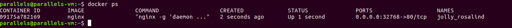
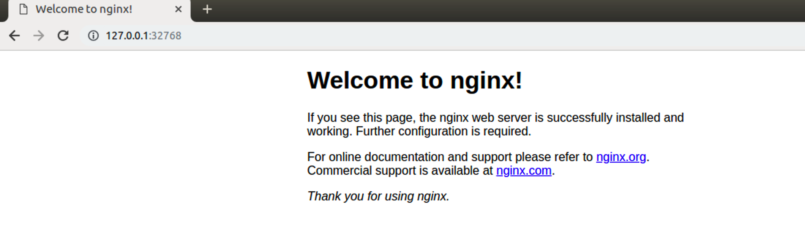
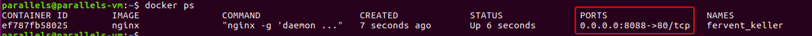

网路管理
学习目标：
了解 Docker网络模型及其特点
应用 端口映射常见操作
Docker 网络很重要，重要的，我们在上面学到的所有东西都依赖于网络才能工作
端口映射详解
端口映射简介
默认情况下，容器和宿主机之间网络是隔离的，我们可以通过端口映射的方式，将容器中的端口，映射到宿主机的某个端口上。这样我们就可以通过 宿主机的ip+port的方式来访问容器里的内容
端口映射种类
1、随机映射 -P(大写)
2、指定映射 -p 宿主机端口:容器端口
注意：
生产场景一般不使用随机映射，但是随机映射的好处就是由docker分配，端口不会冲突,
不管哪种映射都会影响性能，因为涉及到映射
随机端口映射使用
# 命令格式
docker run -d -P [镜像名称]
# 示例 启动一个 nginx 镜像
docker run -d -P nginx
查看效果如下

注意：
宿主机的32768被映射到容器的80端口
-P自动绑定所有对外提供服务的容器端口，映射的端口将会从没有使用的端口池中自动随机选择，但是如果连续启动多个容器的话，则下一个容器的端口默认是当前容器占用端口号+1

指定端口映射使用
# 命令格式
docker run -d -p [宿主机ip]:[宿主机端口]:[容器端口] --name [容器名字] [镜像名称]
# 示例
docker run -d -p 8088:80 nginx
